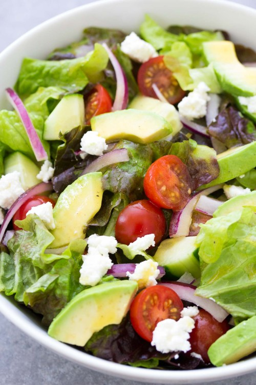

Green Salad

Simple quick green salad
This simple green salad recipe is quick and easy to make,
using fresh and flavorful ingredients. It's the perfect side dish for a meal.
Ingredients
- lettuce or Mixed greens
- Cucumber
- Cherry Tomatoes
- red Onion
- Avocado
- Goat Cheese
- Salad Dressing
Steps
- Wash your greens and dry them well. If you are using whole leaf lettuce,
you'll need to tear or chop it into bite size pieces. Place the salad greens in
a large bowl.
- Add the other vegetables to the salad: sliced cucumber, halved
cherry tomatoes and sliced red onion.
- If salad is ready to serve, you can now toss it with the dressing.
- Drizzle on the dressing, and use salad tongs or two large Servings
spoons to gently combine. Start with less dressing and drizzle on more as needed,to taste.
- Finally, you'll mix in the avocado and goat cheese. It's best to
mix these in gently after you toss the salad with the dressing
so the avocado and goat cheese hold their shape.
- Serve and enjoy!